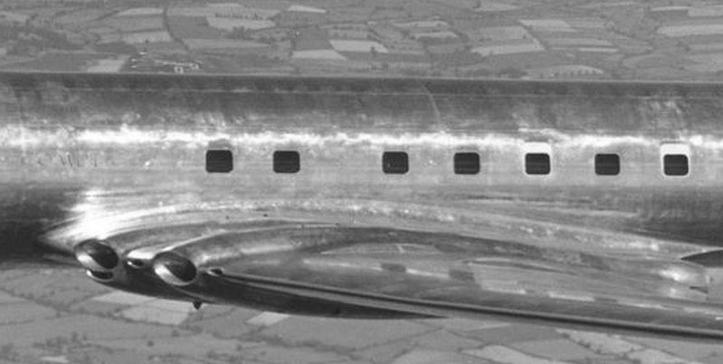
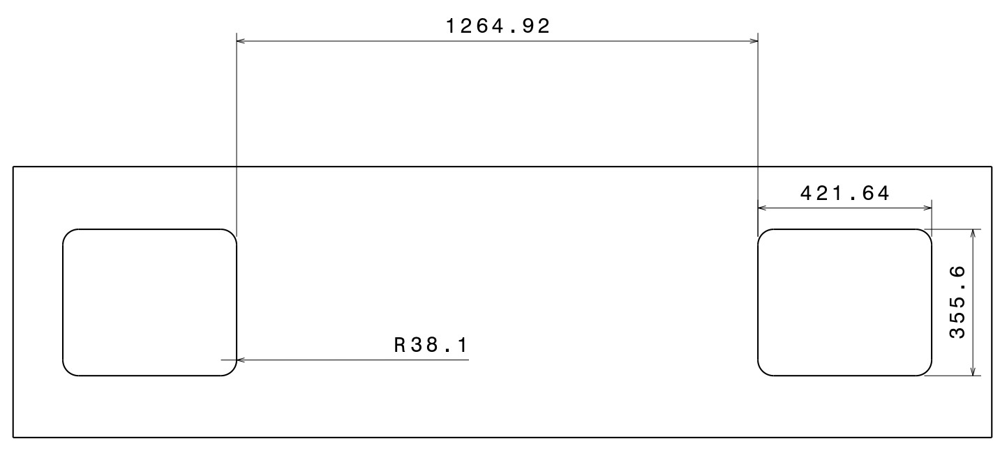

https://www.baesystems.com/en/heritage/de-havilland-comet-1---2
Publication
Historia de la aeronave
El De Havilland Comet I fue la primera aeronave comercial de pasajeros con motores a reacción en ser puesta en servicio, este vehículo diseñado y construido en el Reino Unido causo gran sensación en el mercado, pues contaba con grandes saltos tecnológicos capaces de revolucionar la industria aeronáutica y marcar el camino de lo que sería la aviación hasta nuestros días. El indiscutible valor del avión recaía sobre sus cuatro motores a reacción Haldford H.2 ghost que le proporcionaban aproximadamente 5000 Lbs de empuje, llevándolo a alcanzar velocidades por encima de los 700 Km/h, toda una revolución si es comparado con aeronaves usadas para fines similares, tal como el DC-3, donde la velocidad en vuelo crucero era de 330 Km/h, debido a los dos motores radiales Pratt Whitney R-1830, a pistón. En la época de su diseño y manufactura los metales dominaban la aplicación sobre componentes aeronáuticos, entre toda la categoría de metales era el aluminio el que brillaba debido a sus altas propiedades específicas (relación propiedad sobre densidad). Por tal motivo, el De Havilland usaba una aleación de aluminio con cobre, entre 3.5 y 4.5 por ciento. Muy similar a una seria 2000 actual.

La aeronave era capaz de alcanzar unos 40000 ft de altura, por lo cual era necesario presurizar la
cabina para que los tripulantes y pasajeros no sufrieran hipoxia, falta de oxígeno, durante los
trayectos. Era común en aeronaves de la época usar presurización, pero fue una de las primera
ocasiones donde se hacía sobre tan altas altitudes de vuelo. La cabina era presurizada
aproximadamente, a 0.8 veces la presión atmosférica sobre el nivel del mar, lo que resultaba
cómodo para los pasajeros. Otro atributo destacable de esta aeronave era sus ventanas, siendo su
forma muy cercana a rectángulos. Al igual que la presurización, no era descabellado usar este tipo
de geometría para las ventanas, tal como era el caso del Douglas DC-3.
El problema que presentaba el De Havilland Comet era las grandes altitudes que alcanzaba, esto
provocaba que en las ventanas aumentaran el esfuerzo, por consiguientes el crecimiento de grieta
fuera bastante acelerado. La fatiga era todavía un fenómeno por estudiar en los años cincuenta y
sesenta.
En total fueron dos accidentes por el mismo fenómeno, lo que causa una investigación exhaustiva
por parte del organismo de aviación civil inglés (RAE).
A continuación, se realiza un ejercicio académico para encontrar el número de ciclos y crecimiento
de grieta que pudo haber sufrido la aeronave antes de causar los accidentes.
Parámetros Iniciales
Para realizar un análisis es necesario conocer algunas características geometrías de la aeronave, tales como, la altura y anchura de las ventanas, esto se apreciar con mayor detalle en la siguiente figura. Es de remarcar que los cortes en el fuselaje donde están ubicadas las ventanas de este avión no son precisamente redondas, son rectángulos con los bordes suavizados mediante una circunferencia, lo cual difiere de las aeronaves que transportan pasajeros actualmente donde son completamente ovaladas.

El espesor de piel es de 1.42 mm. Por otra parte, el esfuerzo a los que estaban sometidas las
secciones adyacentes de las ventanas fue calculados por la RAE en su investigación y se concluyó
que alrededor de las ellas se podía alcanzar los 360 MPa, pero descendía a medida que se alejaba,
llegando hasta los 70 MP a en los agujeros más cercanos. Para el análisis se toma un esfuerzo de
70 MPa.
Construcción diagrama de Paris
La construcción del diagrama se realiza mediante la aplicación de la ecuación denominada propagación de esfuerzo de Paris, ecuación 1. (Ecuación PARIS) Donde C y n son constantes implícitas del material, estas a su vez fueron seleccionadas a partir de una aleación de aluminio 2050-T84 [2], C = 4.25E − 8 y n = 3.36. ∆K, el otro término de la ecuación, está dado por la ecuación 2. (ECUACION DIF K) De la ecuación 2 es posible encontrar el ∆σ, conociendo que la aeronave alcanzaba un esfuerzo, por presurización, de aproximadamente 70 MP a una altura de 40000 ft. En tierra o en vuelo a baja altura no era necesario presurizar la cabina, por lo que el esfuerzo mínimo es O MP a, esta combinación es conocida como esfuerzos pulsantes, el ∆σ = 70 MPa. Por otra parte, para encontrar un estimado del tamaño critico de grieta ac se usa la ecuación 3. Mediante iteración, se puede conocer un valor adecuado, lo cual a su vez revela el valor de β. La asunción realizada es que la grieta se mueve de derecha a izquierda, respecto a lo mostrado en la imagen anterior. Ya con todas las incógnitas, se usa la siguiente ecuación para calcular β. (ECUACION Y FIGURA)